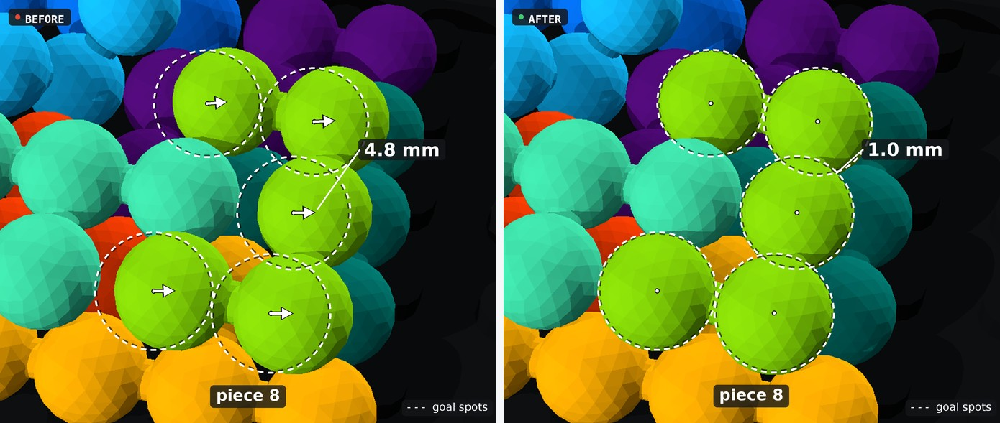
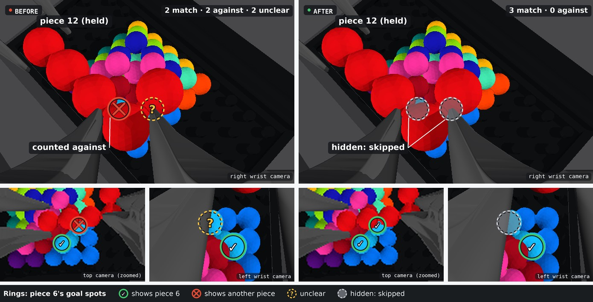
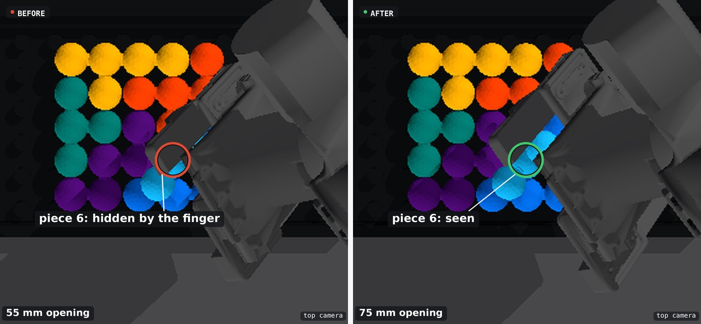

Release {{P:lime}} cleanly 3 cameras Both pads release together. Sideways offset: 4.8 → 1.0 mm. Watch the release Before · slow opening After · simultaneous release
See through an occlusion 3 cameras Skip hidden sites; combine the unobstructed evidence from all three cameras.
Make room to see {{P:cyan}} land 4 cameras Camera-ray checks select a 75 mm opening. The landing becomes visible.
Recognize the finished pyramid 4 cameras Compare visible bead sites across views: missing piece versus complete pyramid.
Keep {{P:lime}} visible during the transfer 4 cameras A 70 mm shift in the initial layout keeps the next piece in view.
Resolve a partial view of {{P:purple}} 4 cameras Check the piece's own goal sites to resolve an ambiguous pose fit.